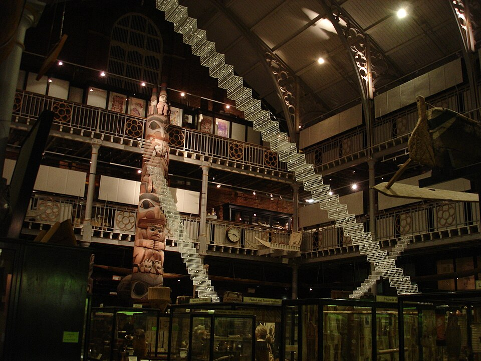
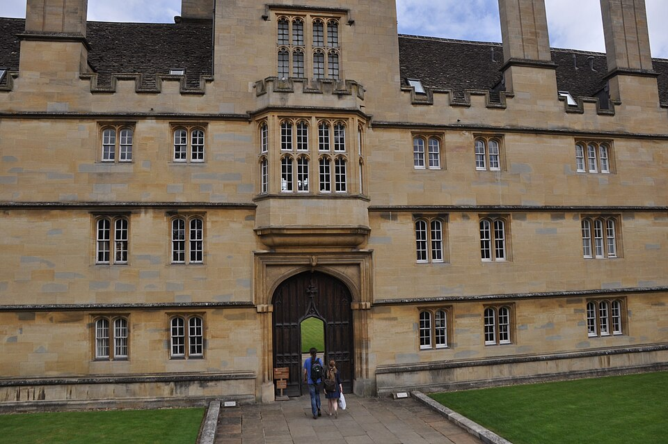
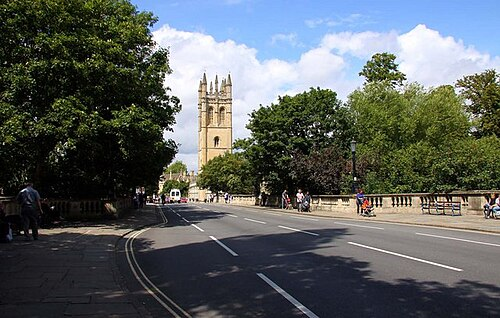
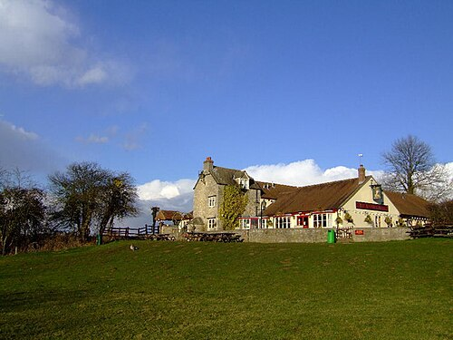

Роман · 1994
Дочери Каина
The Daughters of Cain — одиннадцатый роман об инспекторе Морсе. Русское название рабочее.
- Первое издание
- Macmillan, Лондон, 11 ноября 1994
- Расследуют
- главный инспектор Морс и сержант Льюис
- Место
- вымышленный колледж Уолси, оксфордский музей, восточный Оксфорд
- Экранизация
- «Инспектор Морс», 27 ноября 1996; режиссёр Герберт Уайз, сценарий Джулиана Митчелла
Завязка
Доктора Феликса Макклюра, преподавателя древней истории в колледже Уолси, находят в его квартире с одной ножевой раной в живот: удар нанесён широким клинком. Расследование выводит Морса на Эдварда (Теда) Брукса, бывшего служителя колледжа, который пропадает после кражи в музее. Затем находят и орудие убийства, и число подозреваемых резко растёт.
Название отсылает к Библии: Каин — первый убийца. Здесь убийцы — женщины, и Морсу придётся решить, что важнее: закон или правда о том, что их к этому привело.
Развязка — открыть, если роман прочитан
Брукс, сохранивший ключ со времён работы в музее, украл оттуда нож и убил Макклюра, узнав, что тот торгует наркотиками. Дома Брукс бил жену Бренду и насиловал падчерицу Элли. Бренда рассказала подруге, учительнице Джулии Стивенс, что убийца — Брукс; Джулия соблазнила ученика Кевина Костина, чтобы тот разбил витрину в музее и кража открылась.
Потом Брукса находят заколотым тем же ножом. Джулия, смертельно больная опухолью мозга, собирается признаться Морсу, но умирает. Элли бежит из Оксфорда, оставив записку, что Брукса убила она. Морс приходит к выводу, что настоящая убийца — Бренда, и арестовывает её.
Люди
| Имя | Кто это |
|---|---|
| Феликс Макклюр | Преподаватель древней истории колледжа Уолси. |
| Тед Брукс | Бывший служитель колледжа и музея. |
| Бренда Брукс | Его жена. |
| Элли | Падчерица Брукса. |
| Джулия Стивенс | Учительница, подруга Бренды. |
| Кевин Костин | Её ученик. |
Места
| Место | Что там происходит | |
|---|---|---|
| Колледж Уолси | вымысел | Колледж Макклюра. Назван в честь кардинала Уолси, основателя Крайст-Чёрч. В сериале его сыграл Уодэм. |
| Музей Питта Риверса | есть | В сериале нож крадут отсюда. |
| Мост Магдалины, Каули-роуд | есть | Путь из центра в восточный Оксфорд, где живут Бруксы. |
| «Виктория Армс», Олд-Марстон | есть | Паб на берегу Черуэлла; снят в сериале. |








Реалии
- Музей Питта Риверса
- Антропологический музей Оксфордского университета, основанный в 1884 году на коллекции генерала Питта Риверса. Вещи в нём расставлены не по странам, а по типам: сотни ножей, ключей, масок в тесных старых витринах. Поэт Джеймс Фентон посвятил ему стихотворение, которое цитирует в сериале хранитель.
- Кардинал Уолси
- Канцлер Генриха VIII, основавший в 1525 году колледж, который после его падения стал Крайст-Чёрч.
- Каули-роуд и восточный Оксфорд
- Рабочий Оксфорд за рекой Черуэлл, вокруг автозавода в Каули. Мир Бруксов далёк от колледжей.
- «Макбет»
- Главный литературный фон сериала: учительница Джулия читает с учениками «Макбета» и сама цитирует ведьм и леди Макбет, а Морс — монолог о кинжале.
Книга и сериал
Фильм вышел 27 ноября 1996 года и в целом близок к роману. В ролях: Джон Тоу, Кевин Уотли, Клэр Холман (доктор Лора Хобсон), Джеймс Граут (Стрейндж), Филлис Логан (Джулия Стивенс), Габриэль Ллойд (Бренда Брукс), Тони Хейгарт (Тед Брукс), Аманда Райан (Кей Брукс).
- Элли зовут Кей — так её звали по работе в романе; линия её флирта с Морсом убрана.
- Убрана побочная линия о болезни жены одного из полицейских.
- Финал другой: Джулия оставляет записку и берёт всю вину на себя, а доказать участие Бренды и Кей Морс и Льюис не могут.
- Уолси сыграл Уодэм, снимали также в Крайст-Чёрч, у Мемориала мучеников, на мосту Магдалины, на Каули-роуд и в музее Питта Риверса. Тело Теда находят у городского гребного клуба.
- Открывается фильм прелюдией к «Травиате» Верди; на кремации Джулии звучит квартет Гайдна соль минор. Морс пьёт «Гленфиддих».